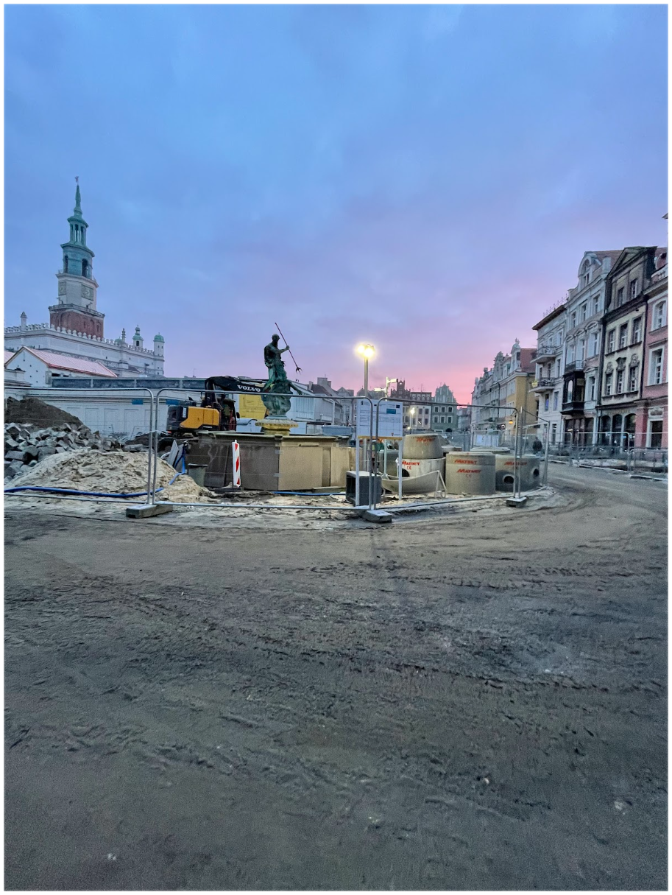
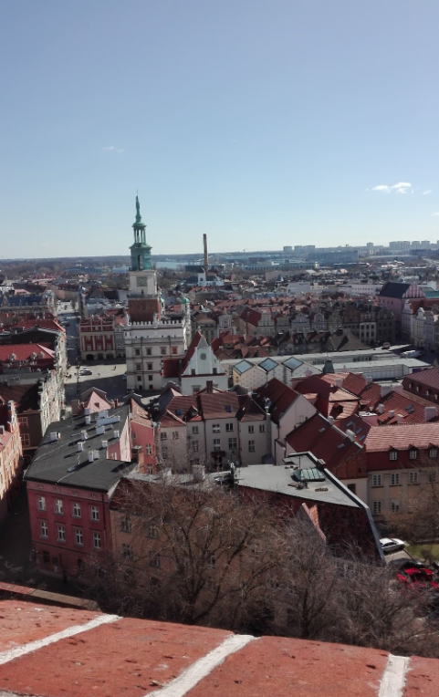
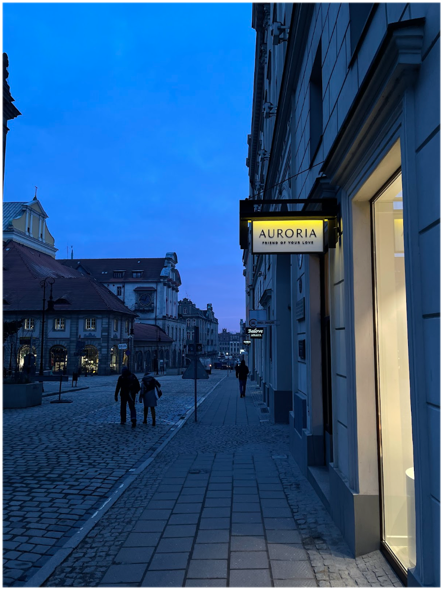

Stary rynek


Stary Rynek - główny plac miejski w Poznaniu wytyczony ok. 1253 roku jako centralne miejsce miasta lokacyjnego. Jest kwadratem o boku długości 141 metrów, a z każdej ze ścian wychodzą trzy ulice, z czego dwie skrajne z narożników. Znajduje się na Starym Mieście, w ramach osiedla administracyjnego Stare Miasto. Jest trzecim co do wielkości rynkiem w Polsce (po krakowskim i wrocławskim) i jednym z większych w Europie.
